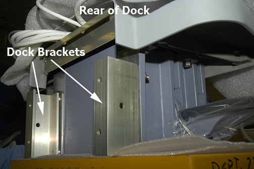

Illustration 1: Dock Brackets

Illustration 1: Dock Brackets
| NOTE: | It is necessary to remove only the nuts from the rear of the dock that connects it to the dock brackets. You do not have to remove the dock brackets from the magnet (see Illustration 2), otherwise you will have to go through table leveling and alignment procedures during reassembly. |
Illustration 2: Dock Brackets at rear of Dock

| NOTE: | Anytime you remove the dock from the magnet, you face the possible task of having to check levelness and alignment of the dock and Patient Table when you reattach the dock to the magnet. As a helpful tip, before you move the dock from its position on the floor, use pieces of tape to mark points on the floor where the dock is to be replaced. |